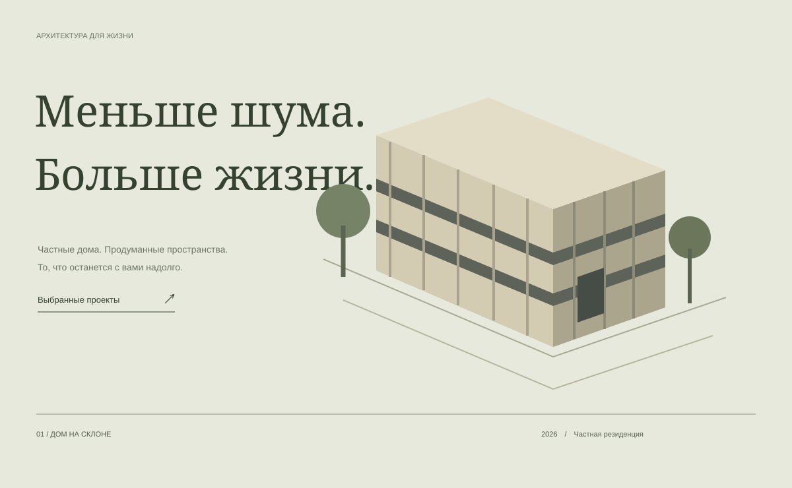

01
Дом на склоне
Частный дом / 2026О проекте +
Демонстрационный проект: дом с террасами, общей гостиной и видом на сад. Архитектурная форма следует рельефу.

Демонстрационный проект: дом с террасами, общей гостиной и видом на сад. Архитектурная форма следует рельефу.
Демонстрационный интерьер: природные материалы, рассеянный свет, открытая планировка.
Свет. Материал. Пропорция.
Три простых ориентира в каждом пространстве.